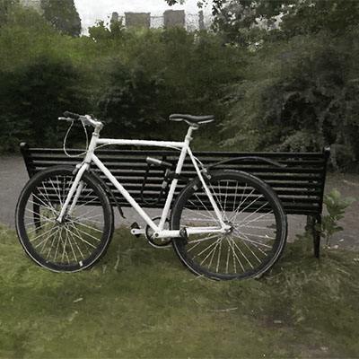
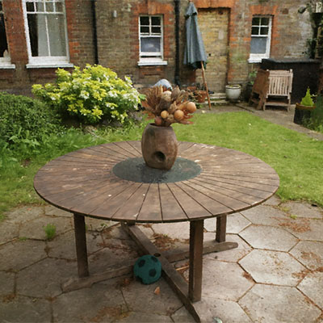
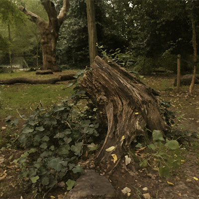
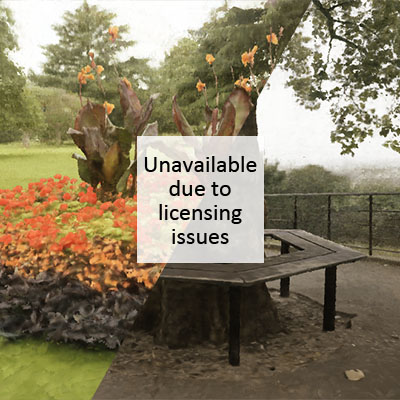
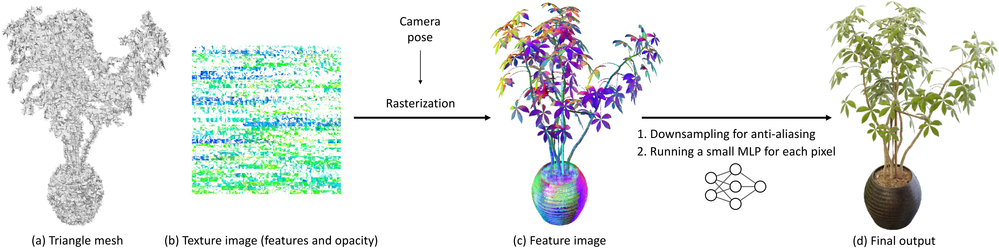
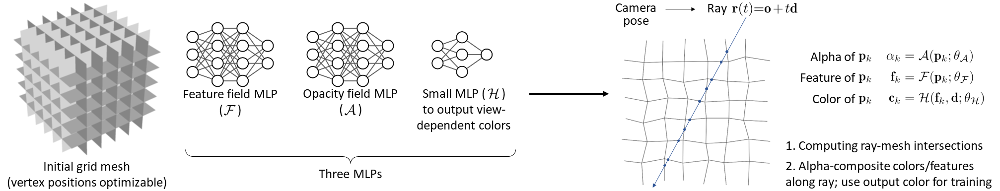

MobileNeRF: Exploiting the Polygon Rasterization Pipeline
for Efficient Neural Field Rendering on Mobile Architectures
| Zhiqin Chen1,2 | Thomas Funkhouser1 | Peter Hedman1 | Andrea Tagliasacchi1,2 | |||
| Google Research1 | Simon Fraser University2 |
Paper
|
Video
|
Code
- Real-Time Interactive Viewer Demos -
-- Forward-facing scenes --
-- Unbounded 360° scenes --
- Method -
Rendering. We represent the scene as a triangle mesh textured by deep features. We first rasterize the mesh to a deferred rendering buffer. For each visible fragment, we execute a neural deferred shader that converts the feature and view direction to the corresponding output pixel color.
Training. We initialize the mesh as a regular grid, and use MLPs to represent the features and opacity for any point on the mesh. For each ray, we compute its intersection points on the mesh, and alpha-composite the colors of those points with respect to their opacity to obtain the output color. In a later training stage, we enforce binary alpha values, and perform super-sampling on features for anti-aliasing. Finally, we extract the triangle mesh and bake the features and opacity into texture images.
- Citing this work -
We present a NeRF that can run on a variety of common devices in real time.
- Abstract -
Neural Radiance Fields (NeRFs) have demonstrated amazing ability to synthesize images of 3D scenes from novel views. However, they rely upon specialized volumetric rendering algorithms based on ray marching that are mismatched to the capabilities of widely deployed graphics hardware. This paper introduces a new NeRF representation based on textured polygons that can synthesize novel images efficiently with standard rendering pipelines. The NeRF is represented as a set of polygons with textures representing binary opacities and feature vectors. Traditional rendering of the polygons with a z-buffer yields an image with features at every pixel, which are interpreted by a small, view-dependent MLP running in a fragment shader to produce a final pixel color. This approach enables NeRFs to be rendered with the traditional polygon rasterization pipeline, which provides massive pixel-level parallelism, achieving interactive frame rates on a wide range of compute platforms, including mobile phones.
- Real-Time Interactive Viewer Demos -
-- Instructions --
Mouse users: left button to rotate; right button to pan (especially on forward-facing scenes); scroll wheel to zoom.
Finger users: one-finger touch to rotate (on 360° scenes) or pan (on forward-facing scenes); two-finger touch to pan and zoom.
Finger users: one-finger touch to rotate (on 360° scenes) or pan (on forward-facing scenes); two-finger touch to pan and zoom.
-- Synthetic 360° scenes --
-- Forward-facing scenes --

-- Unbounded 360° scenes --
|

Bicycle
|

Garden
|

Stump
|

Flower & Treehill
|
- Method -

Rendering. We represent the scene as a triangle mesh textured by deep features. We first rasterize the mesh to a deferred rendering buffer. For each visible fragment, we execute a neural deferred shader that converts the feature and view direction to the corresponding output pixel color.

Training. We initialize the mesh as a regular grid, and use MLPs to represent the features and opacity for any point on the mesh. For each ray, we compute its intersection points on the mesh, and alpha-composite the colors of those points with respect to their opacity to obtain the output color. In a later training stage, we enforce binary alpha values, and perform super-sampling on features for anti-aliasing. Finally, we extract the triangle mesh and bake the features and opacity into texture images.
- Citing this work -
If you find this work useful in your research, please consider citing:
@article{chen2022mobilenerf,
title={MobileNeRF: Exploiting the Polygon Rasterization Pipeline
for Efficient Neural Field Rendering on Mobile Architectures},
author={Zhiqin Chen and Thomas Funkhouser and Peter Hedman and Andrea Tagliasacchi},
journal={arXiv preprint arXiv:xxxx.xxxx},
year={2022}
}